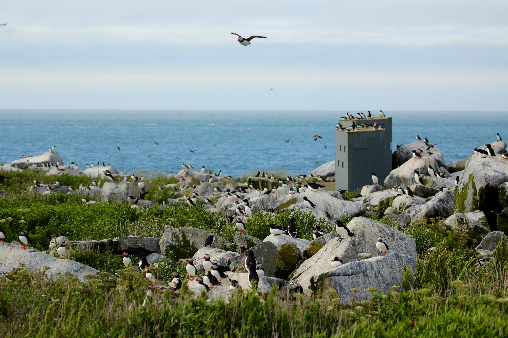
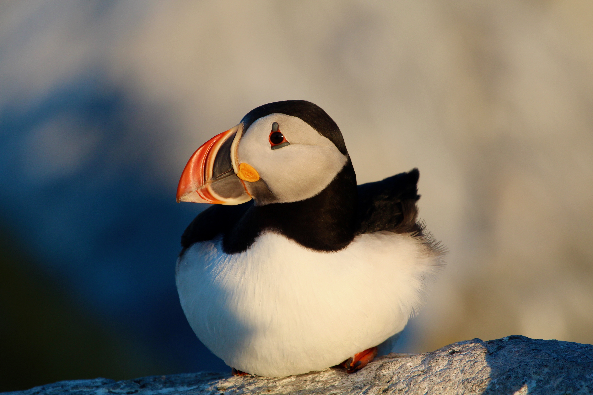
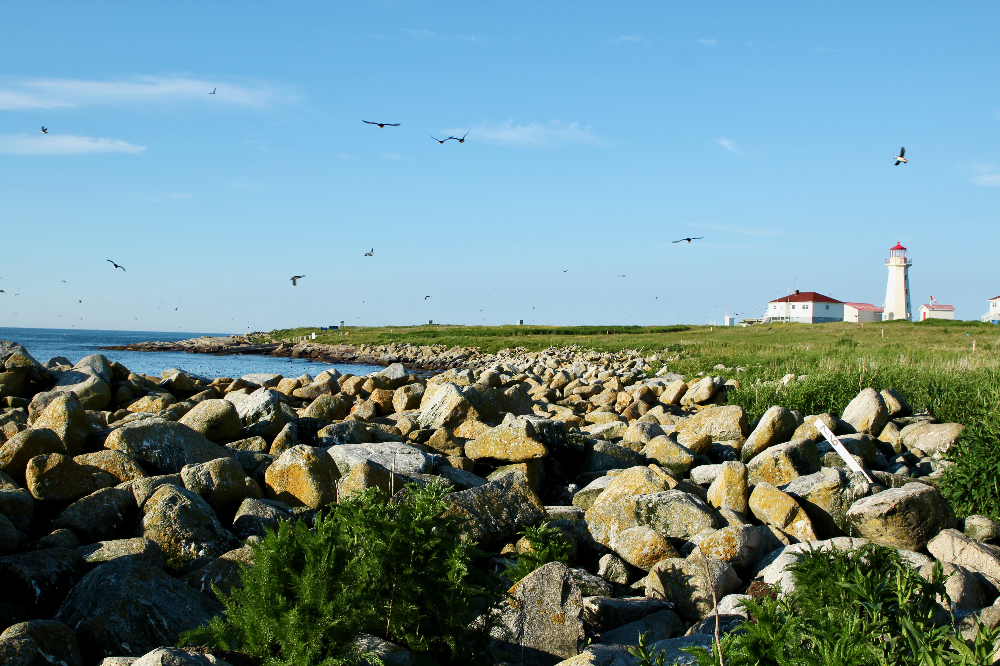
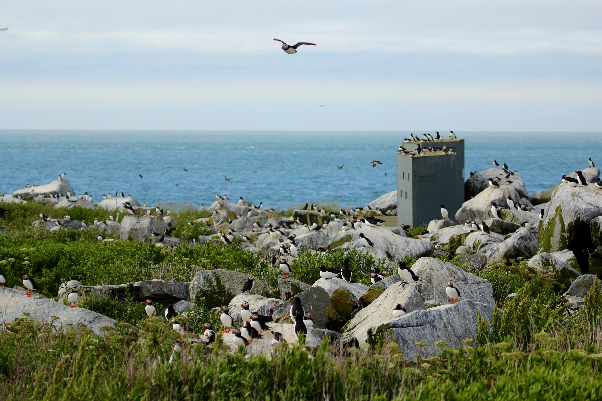
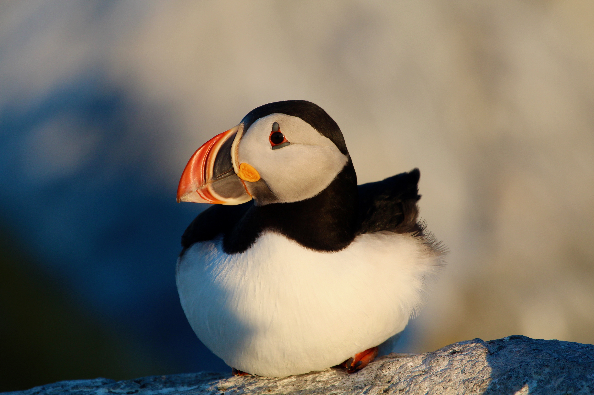
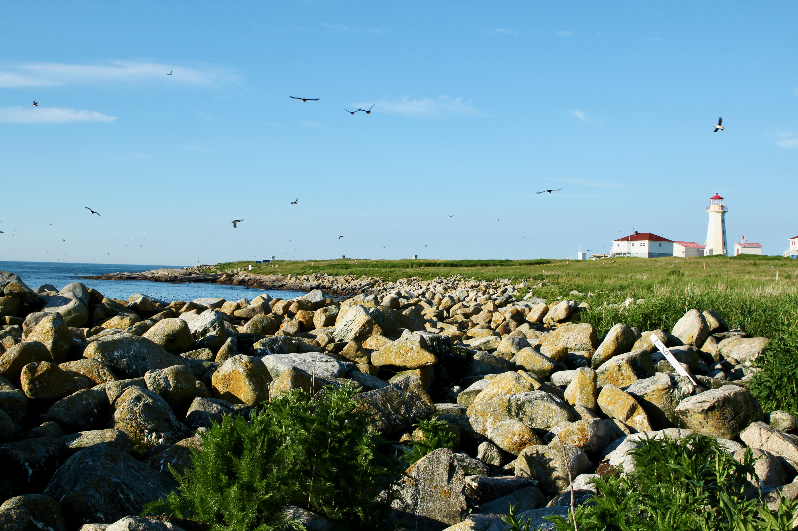
Photo Gallery
These pictures are taken during the field study for the breeding season of 2021.
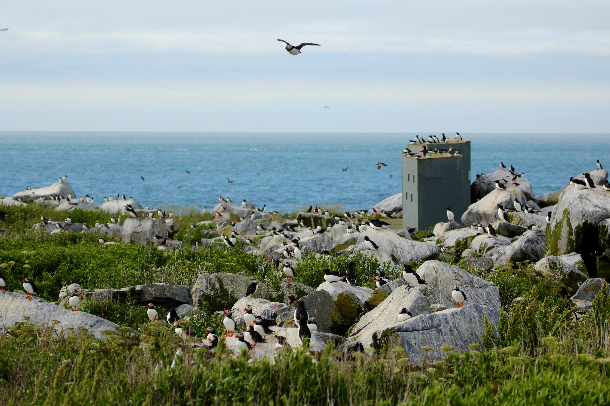
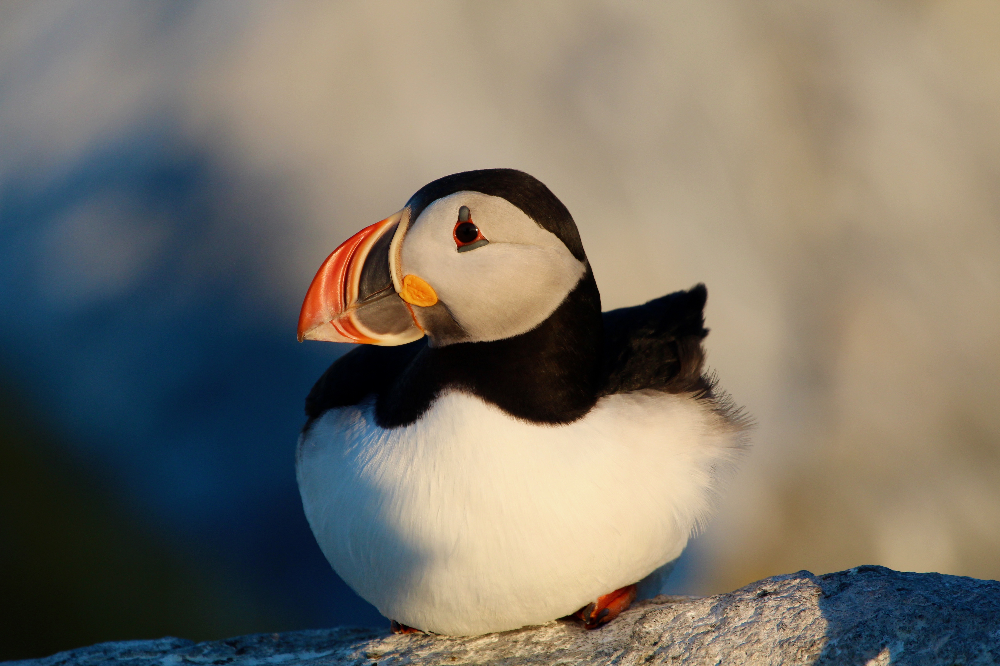
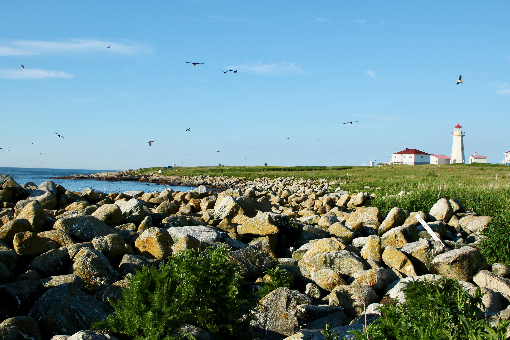
The Gulf of Maine (GOM) is warming faster than most of the world’s oceans, cold-adapted seabirds such as Atlantic Puffins (Fratercula arctica), that are nesting at the southernmost extent of their range in the GOM, are at reproductive risk. Since 1995, researchers from the Atlantic Laboratory for Avian Research (ALAR) have collected various environmental and demographic data for puffins nesting on Machias Seal Island and have observed changes in their phenology. Specifically, puffins are now hatching later than early in the time series but fledge date has not changed. Here, I investigate changes in puffin incubation and nestling periods and how these periods are reacting to changing environmental conditions in the GOM. I found that sea surface temperatures and the North Atlantic Oscillation affect incubation periods, while hatch date and precipitation affect nestling periods. This study provides a groundwork for further research into the reproductive flux that seabirds are experiencing.
* Derived directly from the thesis manuscript, see Downloads below
Research Question: To what extent do environmental factors (such as precipitation, temperature, etc.) affect the breeding periods of Atlantic Puffins in the Gulf of Maine/Bay of Fundy?
The Gulf of Maine is warming faster than most of the world's oceans (Pershing et al., 2015). The rapid warming in this environment provides us with insight as to how species are affected by the effects of anthropogenically-induced climate change, particularly how marine ecosystems are responding to these changes (Wang and Schimel, 2003 , Drinkwater et al., 2003).
Atlantic puffins (Fratercula arctica) are cold-adapted seabirds living at the southern extent of their range. Alcids are the second most abundant nesting seabirds in the Gulf of Maine, with the three most abundant species in the region nest at the southern-most extent of their global range (Lavers et al., 2020; Lowther et al., 2020; Ainley et al., 2021).
Thesis Manuscript
This manuscript was submitted to the Department of Biological Sciences at the Unviersity of New Brunswick in Saint John as part of the Department's Honours Program. This was completed in the Spring of 2022.
Poster Presentation
As part of the Department's Honours Program, Honours students were required to present their findings in a poster-syle reporting symposium, simulating scientific conferences.
These pictures are taken during the field study for the breeding season of 2021.
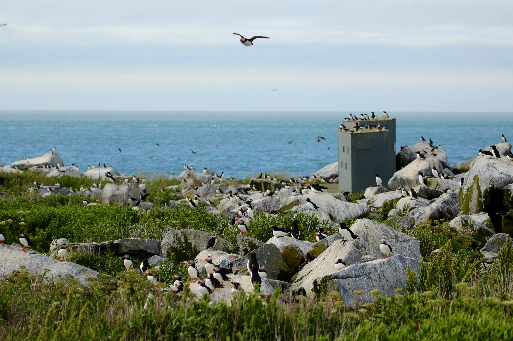
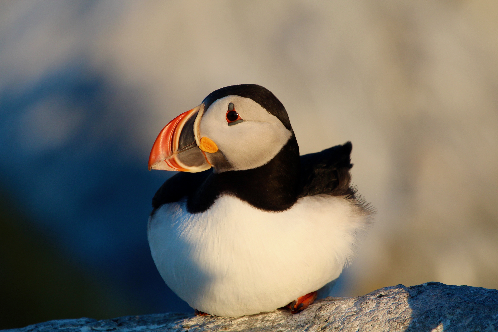
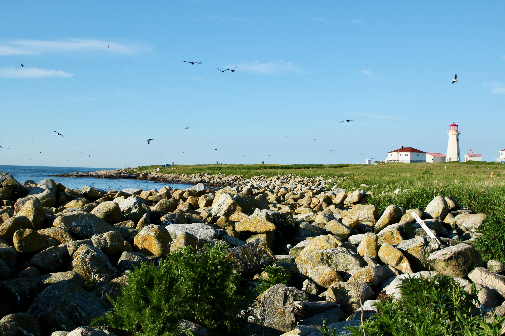